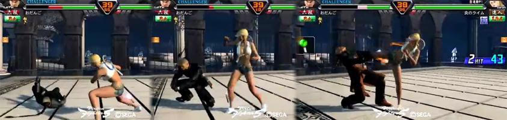

An analysis of Okizeme

Okizeme is a fundamental situation in most fighting games, and can be used to both the defending and attacking player’s advantage. Okizeme, also known as “Oki” is described as the situation when the player character or the opponent is knocked down. When a player is knocked down, the standing player has a few options that they are able to do, putting pressure on the downed player. In street fighter, such options include “meaty” attacks, which are attacks that do not connect on its first active frames, or performing a slow move before the opponent can respond. With meaty attacks, the standing player is able to do one of several options on the downed player: they can throw an attack, use a grab, or wait and/or guard. The downed player also has a few options: they can use an invincible move on wake up, use a normal attack, do a counter grab, or wait and/or guard. From the standing player’s position, an attack beats a wake up grab, throwing a grab beats guarding, and waiting/guarding beats a wake up invincible move. On the defending player’s side, an invincible move on wake up beats attacks and grabs, using a normal attack beats grabs and some attacks, and a counter grab cancels an attacking grab. Oki essentially creates a game of Rock-Paper-Scissors that the opponent must choose the correct option to prevent further damage or from going into a worse disadvantaged state.